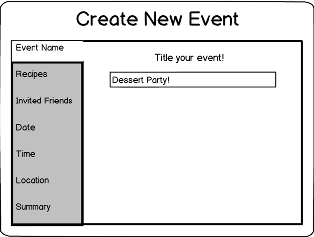
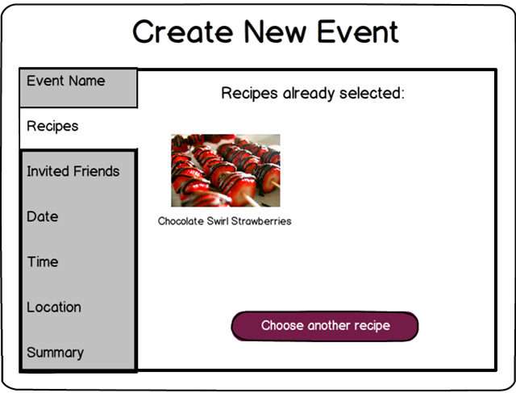
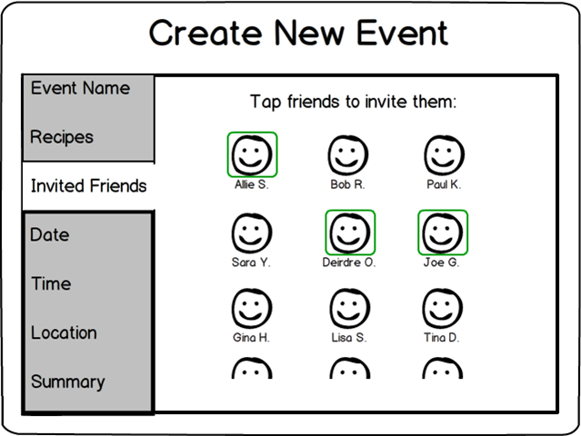
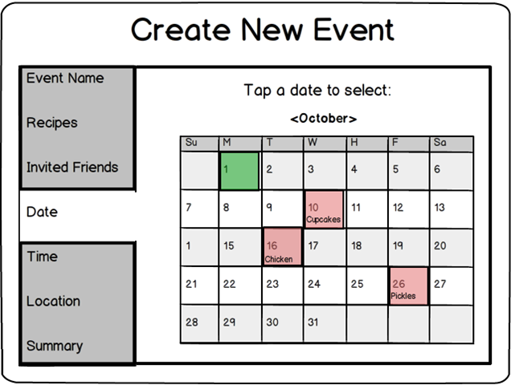
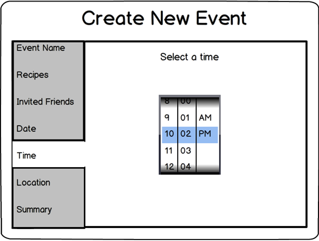
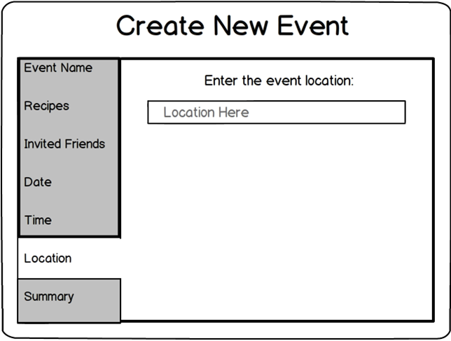
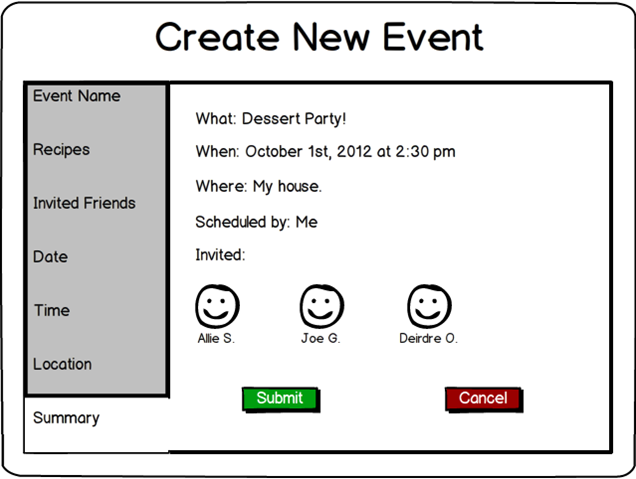

Fallera - Social Cooking
Human Factors Interface Design, Fall 2012

Creating a new event requires the user to put in several pieces of information. Each of those pieces of information is requested on a different tab on the "Create New Event" page so that the inputs can be large enough to see. Users can navigate the tabs in any order they wish, but we ordered them in the most logical order for creating a new event. The first input (below) is the name of the event.
The user is next prompted to select one or more recipes from his or her recipe book for the event. This step is optional. Selected recipes appear on the page.
Next, the user is prompted to select friends to invite to the event. Selected friends are indicated by a green box around their picture. Friends are selected or deselected by tapping on their pictures.
The user next selects the date for the event. Events which have other cooking events scheduled on them appear as light red. The calendar does not sync with a google or outlook calendar because the user does not need that much information; rather, only potentially conflicting cooking events are shown. The date is selected by tapping on the calendar day of interest, which then turns green. Tapping again deselects the day. The month can be changed by tapping on the month name.
The user selects the time for the event. The hour, minute, and AM/PM selector pop up as dials, which are here represented by an iPhone time selector. This is not precisely what our interface will look like but was determined to be sufficient for prototyping purposes.
Finally, the user inputs the location for the event. This is usually as simple as "My House" or "Charter Oak Church"; we determined that linking to an address or geotagging was not necessary.
The user is then presented with a summary of the event as defined by the other tabs and is presented with the option to create or cancel the event.
